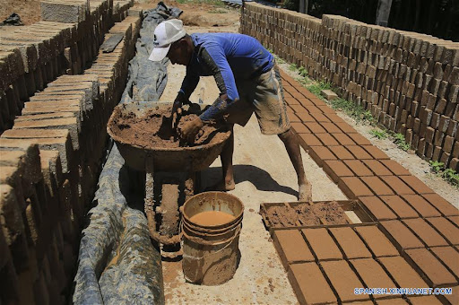
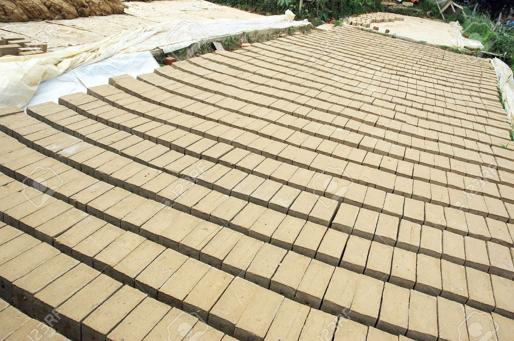
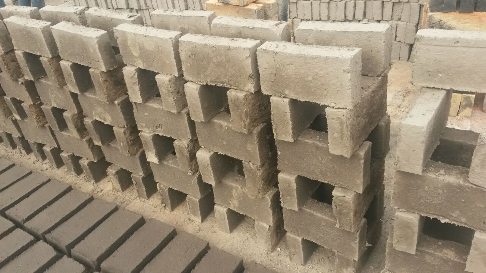
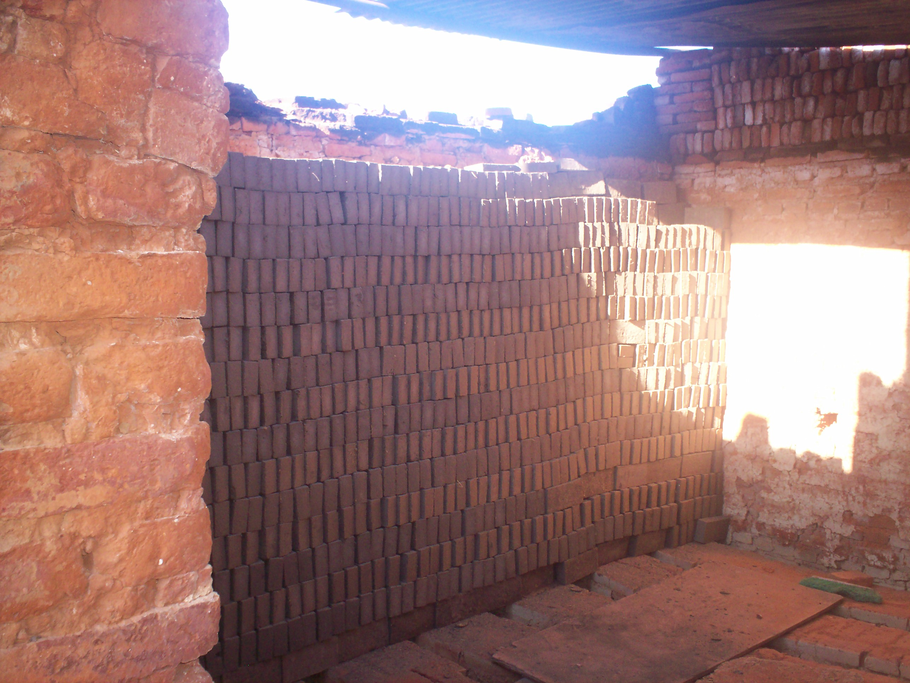
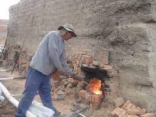
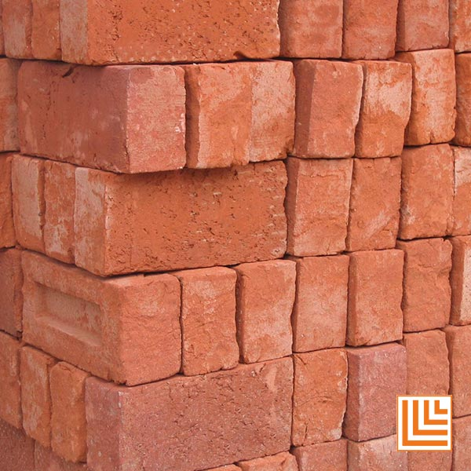

FABRICACION
-

Preparacion de la pasta y moldeo Fabricación mediante el moldeado de arcilla húmeda (20-30% de humedad), a menudo a mano; se interpone una capa de arena entre la pasta y el molde, que permite evitar adherencias, resultando una ladrillo compacto y de textura mate. Ladrillo moldeado por el proceso de pasta húmeda mediante el lubricado de las paredes interiores del molde con agua para evitar la adherencia de la misma con el molde.
-

SECADO Existen dos tipos de ladrillo Pandereta liso y acanalado. Ambos tienen la función de hacer muros divisorios, tabiques ligeros (pared delgada que sirve para separar las piezas de la casa). En el caso del ladrillo pandereta liso, su adherencia es más rápida ya que no presenta desniveles.Antes de comprar ladrillos revisa que no presenten rajaduras y que no estén crudos (coloración muy clara) o muy cocidos (coloración marrón negruzca); de lo contrario, serán de baja resistencia o muy quebradizos.
-

PERFILARLO DESPUES DE 3 DIAS DE SECADO Después de que los jabones se hallan quedado 3 días secando al aire libre, estos ya han perdido el 90% de su humedad solo si el sol que han recibido ha sido fuerte y constante. Entonces se procede a levantarlos de suelo, perfilarlos para que retiren los restos del suelo y que queden planos y se los apila de manera vertical de dos en dos hasta que se tenga que armar el horno.
-

HORNO DE LADRILLO ara hacer el horno se utilizan los ladrillos que habíamos apilado, ahora se va a crear una estructura en la que los ladrillos estarán en canto, o sea parados. Se crea primera las patas del horno, estas serán 4, las 2 de los de adentro serán el triple de gruesas que las de los costados y el espacio que quede entre ella se llama boca del horno, en la boca es donde este se lo alimentara con el combustible biomasico (leña o tagua). Luego de haber hecho las patas se crearán encima 9 niveles más de ladrillo apilado de la misma manera.
-

Ya teniendo armado nuestro horno se lo procede a encenderlo se prende fuego a toda la leña que está en las bocas de los hornos, dependiendo del tiempo que se consuma la leña se seguirá alimentando a las bocas, el tiempo vario de 2 a 3 horas. La dirección del viento es muy importante ya que si este viene de rente a las bocas la leña se consumirá más rápido y se calentara más el horno.
-

ALMACENAJE Proceso ya final y envio a todos los destinos Antes del embalaje se procede a la formación de paquetes sobre pallets, que permitirán después moverlos fácilmente con carretillas de horquilla. El proceso de embalaje consiste en envolver los paquetes con cintas de plástico o de metal, de modo que puedan ser depositados en lugares de almacenamiento hasta que sean llevados a la obra.